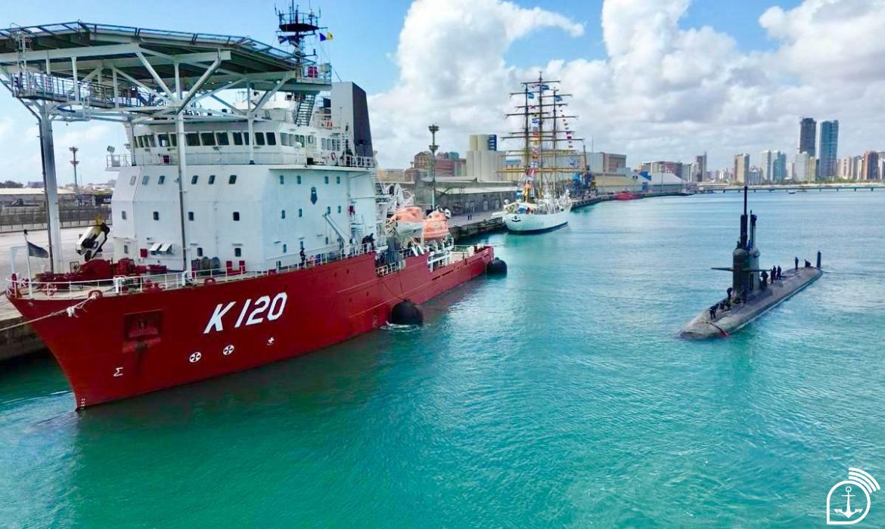

Bem Vindo ao Navio
O NSS GUILLOBEL é uma importante unidade da Marinha do Brasil dedicada ao apoio, socorro e salvamento de submarinos e de seus tripulantes. Sua missão está diretamente ligada à segurança e à capacidade operacional da Força de Submarinos, atuando em operações de busca, assistência e resgate em ambiente marítimo. Além de sua função de socorro submarino, o Guillobel contribui para o adestramento e o preparo das equipes envolvidas nas operações navais, mantendo a Marinha preparada para responder a diferentes situações de emergência. Dessa forma, o navio representa um importante elemento de apoio à atividade submarina brasileira e à segurança daqueles que operam no ambiente subaquático.
Orientações
Banheiros
- Fechar o registro da ducha higiênica após o uso.
- Manter a área de banheiro limpa e organizada.
- Não jogar nada no vaso sanitário.
- Registro da esquerda abre e fecha a saída de água e o registro da direita regula a temperatura.
- Não há necessidade de pressionar o botão da descarga com força, em caso de inoperância, não insistir, pois a água irá acumular até o problema ser resolvido.
- Lave as mãos após usar o banheiro e antes dos ranchos
Camarotes
- No interior da porta estão fixadas instruções sobre o uso dos coletes, rota para saída de emergência e a baleeira para qual deverá se deslocar em caso de emergência.
- Apagar as luzes do banheiro e camarote ao sair do compartimento.
- MAnter as cortinas fechadas a noite.
- Não consumir alimentos no camarote.
- Não instalar ou utilizar cafeteira, sanduicheira, torradeira ou qualquer equipamento que possua resistência de aquecimento.
- Desligar equipamentos eletrônicos ao sair do camarote.
- Verificar peiação de todo o camarote.
- Cada militar é responsável pela organização e manutenção do seu camarote
- Os camarotes do navio deverão permanecer abertos durante todo o expediente. Todo material particular deve ser guardado dentro dos armários e gavetas.
Geral
- Observar a Tabela Mestra Individual o local de guarnecimento de cada militar.
- Na área habitável do convés 1 e 4 existe uma porta magnetizada que deverá ser mantida aberta. Não forçar o fechamento.
- Ao terminar as refeições, descartar as sobras de comida. Os pratos, copos e talheres deverão ser levados ao local indicado.
- Na academia, guardar os pesos e anilhas após o uso.
- As baterias e pilhas deverão ser descartadas na lixeira do passadiço.
- Área destinada aos fumantes encontra-se nas asas de BB e BE.
- O acesso à academia será pelo passadiço, devendo ser informado ao contramestre a ida e o retorno.
Hierarquia a Bordo
| Comandante | CF FERREIRA JUNIOR |
| Imediato | CC AFONSO |
| Chefe do Departamento de Mergulho | CC WALLACE |
| Chefe do Departamento de Máquinas | CC JOÃO AUGUSTO |
| Chefe do Departamento de Operações | CC CAVALCANTE |
| Chefe da Divisão de Intendência | 2ºT (IM) Gabriele Avila |
| Praça mais antiga | SO-MC Audeirton |
| Sargenteante geral | SO-OS Pinho / SO-CA Torres |
| Mestre | SO MR SB Geraldo |

História do NSS Guillobel
O Navio de Socorro Submarino Guillobel (NSS Guillobel – K-120) foi incorporado à Marinha do Brasil em 12 de maio de 2020, após sua aquisição e adaptação para atender às necessidades da Força de Submarinos. Sua chegada representou um importante avanço na capacidade brasileira de realizar operações especializadas de mergulho e socorro submarino. O nome do navio homenageia o Almirante de Esquadra Renato de Almeida Guillobel, que exerceu o cargo de Ministro da Marinha entre 1951 e 1954, deixando sua contribuição para a história naval brasileira. Equipado com sistemas e recursos especializados, o NSS Guillobel tem como missão apoiar operações de socorro a submarinos sinistrados, contribuir para o salvamento de suas tripulações e realizar atividades de mergulho. Além disso, sua estrutura permite o apoio a diferentes operações navais que exigem elevado preparo técnico e coordenação. Mais do que um meio naval, o Guillobel representa a dedicação, a disciplina e a capacidade técnica dos militares da Marinha do Brasil, contribuindo para a segurança da vida humana no mar e o fortalecimento do Poder Naval brasileiro.